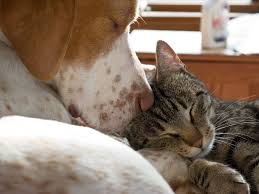

Cuidados y Educación para su Perro
Tener un perro implica una gran responsabilidad. A demás de facilitarle las cosas básicas como son la comida, el veterinario o hacer ejercicio, hay otros consejos que son para que su mascota esté feliz y con una salud ed hierro